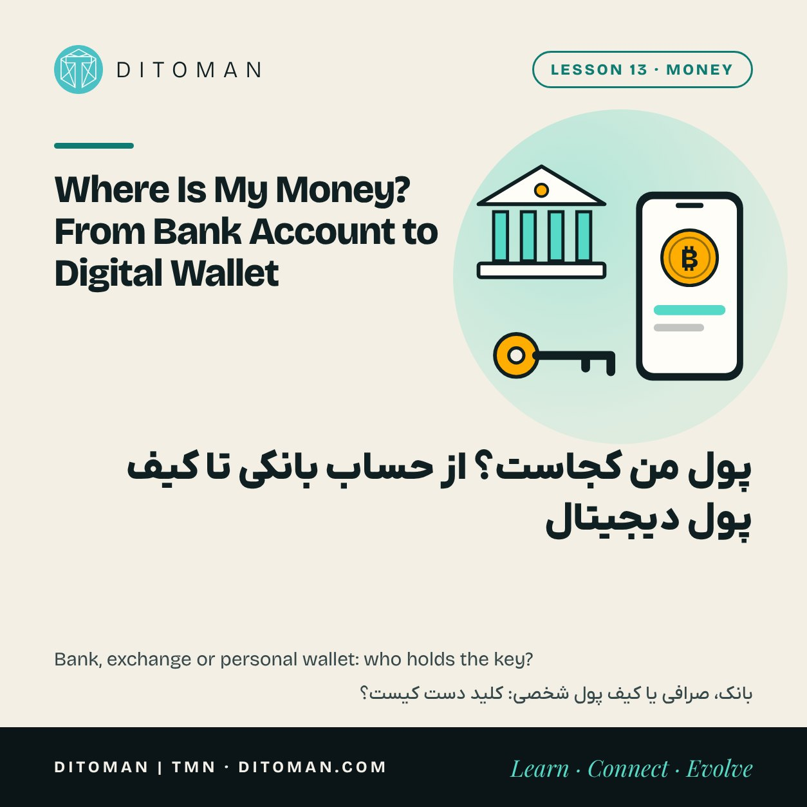

Where Is My Money? From Bank Account to Digital Wallet
أين أموالي؟ من الحساب المصرفي إلى المحفظة الرقمية
A balance on a screen can mean three very different things. This lesson compares a bank account, an exchange account and a personal wallet, and shows who really controls the money in each one.
الرقم الذي نراه على الشاشة قد يحمل ثلاثة معانٍ مختلفة تمامًا. يضع هذا الدرس الحساب المصرفي وحساب منصة الصرافة والمحفظة الشخصية جنبًا إلى جنب ويبيّن في كل منها بيد من السيطرة الفعلية على المال.
Lesson Content
محتوى الدرس
Read the lesson in English or Persian.
اقرأ الدرس بالفارسية أو الإنجليزية.
Open a banking app and you see a number. Open an exchange app and you see another number. Open a crypto wallet and there is a third. They all look like "my money". They are not the same kind of thing.
The difference comes down to one question we can ask of any balance: if I want this money right now, who has to say yes?
01. A bank balance is a promise
When you deposit money, it does not sit in a box with your name on it. The bank lends most of it out. What you own is a claim: the bank owes you that amount and promises to pay when you ask.
That promise is protected in several ways. Banks are licensed and supervised, and many countries run a deposit guarantee that repays savers up to a ceiling if a bank fails. In the United States the ceiling is 250,000 dollars per depositor per bank, and in the European Union it is 100,000 euros. Iran has its own Deposit Guarantee Fund with its own ceiling. Above the ceiling, a saver waits in line with other creditors.
02. An exchange balance is also a promise
A crypto exchange works the same way in one important respect: the coins are in the exchange's wallets, and your account shows what the exchange owes you. You hold a claim on a company.
The difference is the protection behind it. Most exchange accounts have no deposit guarantee. When the exchange FTX collapsed in November 2022, customers found that billions of dollars of their assets were missing, and they had to wait for a bankruptcy court.
This does not mean every exchange is dishonest. It means the balance is only as good as the company behind it.
03. A personal wallet is a key
A personal wallet, also called a self-custody wallet, is different. The coins are recorded on the blockchain, and the wallet holds the private key that can move them. Nobody else has to approve a transfer.
The key is usually shown once as a recovery phrase: 12 or 24 ordinary words. Whoever has those words controls the money. There is no "forgot my password" button and no office to call.
| Bank account | Exchange account | Personal wallet | |
|---|---|---|---|
| What you hold | A claim on the bank | A claim on the company | The key itself |
| Who approves a transfer | The bank | The exchange | Only you |
| If you forget the password | The bank resets it | The exchange resets it | No reset; only the recovery phrase |
| If the institution fails | Guarantee up to a ceiling | Usually no guarantee | Does not depend on one |
04. More control, more responsibility
With a bank, you trust an institution and get help when something goes wrong. With a personal wallet, you trust yourself and carry the whole responsibility.
If you lose the recovery phrase, the money is gone, even though it is still visible on the blockchain.
If someone else sees the phrase, they can empty the wallet from anywhere in the world, and the transfer cannot be reversed.
If you send to the wrong address or network, there is usually no way back. Lesson 16 covers this step by step.
05. Simple habits that prevent most losses
Write the recovery phrase on paper and keep it somewhere safe and dry. Do not photograph it, and do not store it in a chat, an email or a notes app.
Nobody legitimate will ever ask for the phrase. Not support staff, not a wallet company, not Ditoman.
Start with a small amount and practise receiving and sending before you move anything that matters.
Use a personal wallet for tokens an exchange does not support. TMN is one example: it must be received in a personal BNB Smart Chain wallet, as the TMN guide shows.
What to take from this
A balance is not always money in your hand. Ask who has to say yes before it moves.
A bank deposit is a claim on a bank, with supervision and a guarantee up to a ceiling.
An exchange balance is a claim on a company, usually without a guarantee.
A personal wallet gives you the key and the full responsibility that comes with it.
No arrangement is best for everyone. Many people use more than one, each for a different purpose.
نفتح تطبيق البنك فنرى رقمًا. نفتح تطبيق المنصة فنرى رقمًا آخر. نفتح محفظة الكريبتو فنجد رقمًا ثالثًا. الثلاثة تبدو «مالي»، لكنها ليست من جنس واحد.
يتضح الفرق بسؤال واحد يمكن طرحه عن أي رصيد: لو أردت هذا المال الآن، من يجب أن يأذن؟
01. رصيد البنك وعد
حين نودع المال في البنك فإنه لا يبقى في صندوق باسمنا. البنك يقرض معظمه. ما نملكه «مطالبة»: البنك مدين لنا بهذا المبلغ وقد وعد بدفعه متى طلبنا.
ويُحمى هذا الوعد بعدة طرق. فالبنوك مرخَّصة وخاضعة للرقابة، وفي كثير من البلدان صندوق لضمان الودائع يعيد إلى المودع ماله حتى سقف معين إذا أفلس البنك. وفي الولايات المتحدة هذا السقف 250 ألف دولار لكل مودع في كل بنك، وفي الاتحاد الأوروبي 100 ألف يورو. ولإيران أيضًا صندوق لضمان الودائع بسقفه الخاص. وفيما يزيد عن السقف يبقى المودع في الصف مع بقية الدائنين.
02. رصيد المنصة وعد أيضًا
منصة الكريبتو تعمل من هذه الناحية المهمة بالطريقة نفسها: العملات في محافظ المنصة، وحسابنا يبيّن كم تدين المنصة لنا. لدينا مطالبة على شركة.
الفرق في الحماية التي تقف خلف هذه المطالبة. فمعظم حسابات المنصات بلا ضمان ودائع. وحين انهارت منصة FTX في نوفمبر 2022، اكتشف العملاء أن مليارات الدولارات من أصولهم ليست في مكانها، وعليهم انتظار محكمة الإفلاس.
لا يعني هذا أن كل منصة سيئة. يعني أن الرصيد لا يساوي إلا ما تساويه الشركة التي خلفه.
03. المحفظة الشخصية مفتاح
المحفظة الشخصية مختلفة. العملات مسجّلة على البلوكتشين، والمحفظة تحمل المفتاح الخاص وهو المفتاح الذي يستطيع نقلها. ولا يلزم إذن أي شخص آخر للنقل.
وعادةً يُعرَض هذا المفتاح مرة واحدة في صورة عبارة الاسترداد وهي 12 أو 24 كلمة عادية. ومن يملك هذه الكلمات يتحكم في المال. لا يوجد زر «نسيت كلمة المرور»، ولا مكتب يمكن الاتصال به.
| الحساب المصرفي | حساب المنصة | المحفظة الشخصية | |
|---|---|---|---|
| ماذا تملك | مطالبة على البنك | مطالبة على شركة | المفتاح نفسه |
| من يوافق على التحويل | البنك | المنصة | أنت وحدك |
| إن نسيت كلمة المرور | البنك يعيد التعيين | المنصة تعيد التعيين | لا إعادة تعيين؛ فقط عبارة الاسترداد |
| إن أفلست الجهة | ضمان حتى سقف | عادةً بلا ضمان | لا تعتمد على جهة |
04. تحكّم أكبر، مسؤولية أكبر
في البنك نثق بجهة ونطلب المساعدة عند حدوث مشكلة. وفي المحفظة الشخصية نثق بأنفسنا والمسؤولية كلها علينا.
إذا ضاعت عبارة الاسترداد، فالمال ضاع، وإن كان لا يزال ظاهرًا على البلوكتشين.
إذا رأى شخص آخر العبارة، فيمكنه تفريغ المحفظة من أي مكان في العالم، ولا رجعة في هذا التحويل.
إذا أرسلنا إلى عنوان أو شبكة خاطئة، فعادةً لا سبيل للتراجع. يشرح الدرس 16 ذلك خطوة بخطوة.
05. بضع عادات بسيطة تمنع معظم الخسائر
اكتب عبارة الاسترداد على ورق واحفظها في مكان آمن وجاف. لا تصوّرها ولا تحفظها في الدردشة أو البريد أو تطبيق الملاحظات.
لا يطلب هذه العبارة أي شخص أو شركة نزيهة. لا الدعم ولا الشركة المصنّعة للمحفظة ولا ديتومان.
ابدأ بمبلغ صغير ودرّب نفسك على الاستلام والإرسال قبل نقل مبلغ مهم.
للرموز التي لا تدعمها المنصة تحتاج إلى محفظة شخصية. TMN مثال: يجب استلامه في محفظة شخصية على شبكة BNB Smart Chain؛ ودليل TMN يبيّن ذلك.
ماذا نستنتج
الرصيد لا يعني دائمًا مالًا في اليد. اسأل من يجب أن يأذن بنقله.
الوديعة المصرفية مطالبة على البنك، مع رقابة وضمان حتى سقف.
رصيد المنصة مطالبة على شركة وعادةً لا ضمان له.
المحفظة الشخصية تعطيك المفتاح، مع كل مسؤوليته.
لا توجد طريقة هي الأفضل للجميع. كثيرون يستخدمون أكثر من طريقة، كل واحدة لغرض.
Ready to try a personal wallet?
تريد تجربة محفظة شخصية؟
The TMN guide shows, with pictures, how to add a token to a personal wallet and copy your address. Lesson 17 then covers the mistakes and scams to watch for.
يبيّن دليل TMN بالصور كيف تضيف رمزًا إلى محفظة شخصية وتنسخ عنوانك. ويراجع الدرس 17 الأخطاء وعمليات الاحتيال التي يجب الحذر منها.
Key Concepts
المفاهيم الأساسية
- Deposit as a claim
- Deposit guarantee
- Custody
- Exchange (custodial) account
- Personal (self-custody) wallet
- Private key
- Recovery phrase
- Irreversible transfer
- الوديعة بوصفها مطالبة
- ضمان الودائع
- حفظ الأصول
- حساب المنصة (أمانة)
- المحفظة الشخصية
- المفتاح الخاص
- عبارة الاسترداد
- تحويل لا رجعة فيه
Learning Objectives
أهداف التعلّم
- Explain why a bank balance is a claim and not stored cash.
- Compare the protection behind a bank account and an exchange account.
- Describe what a private key and a recovery phrase do.
- List three ways money can be lost in a personal wallet.
- Name the habits that keep a recovery phrase safe.
- اشرح لماذا رصيد البنك مطالبة وليس مالًا محفوظًا جانبًا.
- قارن الحماية خلف الحساب المصرفي وحساب المنصة.
- قل ماذا يفعل المفتاح الخاص وعبارة الاسترداد.
- سمِّ ثلاث طرق لضياع المال في المحفظة الشخصية.
- عدّد العادات التي تحفظ عبارة الاسترداد آمنة.
Quiz
اختبار قصير
Check what stayed with you. The answer is under each question.
انظر ماذا علق في ذهنك. الإجابة تحت كل سؤال.
Question 1
السؤال 1
What do you own when you deposit money in a bank?
حين تضع المال في البنك، ماذا تملك؟
A. Cash stored in your name
أ. نقدًا محفوظًا جانبًا باسمك
B. A claim on the bank
ب. مطالبة على البنك
C. A share of the bank
ج. حصة في البنك
Correct answer: B
الإجابة الصحيحة: ب
Question 2
السؤال 2
Who can move the coins in a personal wallet?
من يستطيع نقل عملات محفظة شخصية؟
A. Whoever holds the private key or recovery phrase
أ. كل من يملك المفتاح الخاص أو عبارة الاسترداد
B. The wallet company's support team
ب. فريق الدعم في الشركة المصنّعة للمحفظة
C. The exchange where they were bought
ج. المنصة التي اشتُريت منها
Correct answer: A
الإجابة الصحيحة: أ
Question 3
السؤال 3
Someone from 'support' asks for your recovery phrase to fix a problem. What is this?
شخص باسم «الدعم» يطلب عبارة الاسترداد لحل مشكلة. ما هذا؟
A. A normal security step
أ. خطوة أمنية عادية
B. A scam
ب. احتيال
C. A legal requirement
ج. شرط قانوني
Correct answer: B. Nobody legitimate ever asks for it.
الإجابة الصحيحة: ب. لا يطلب هذه العبارة أي شخص أو شركة نزيهة.
Question 4
السؤال 4
What usually protects an exchange balance if the exchange fails?
إذا أفلست المنصة، ما الذي يحمي رصيدك عادةً؟
A. A deposit guarantee, like a bank
أ. ضمان الودائع كالبنك
B. The blockchain
ب. البلوكتشين
C. Usually nothing; you wait with other creditors
ج. عادةً لا شيء؛ تنتظر مع بقية الدائنين
Correct answer: C
الإجابة الصحيحة: ج
Question 5
السؤال 5
Where is the safest place for a recovery phrase?
ما أأمن مكان لعبارة الاسترداد؟
A. A photo in your phone gallery
أ. صورة في معرض الهاتف
B. A message to yourself in a chat app
ب. رسالة إلى نفسك في تطبيق مراسلة
C. On paper, in a safe place
ج. على ورق في مكان آمن
Correct answer: C
الإجابة الصحيحة: ج
Sources
المصادر
- FDIC: Deposit insurance (United States)
- European Commission: Deposit guarantee schemes
- RTE News: FTX founder sentenced over the loss of customer funds (28 March 2024)
- ethereum.org: Wallets, keys and recovery phrases
Guarantee ceilings change. Check the current ceiling with the deposit guarantee body in your own country.
سقف ضمان الودائع يتغير. اسأل جهة ضمان الودائع في بلدك عن السقف الحالي.
نتابع معًاFollow along
New lessons are announced first on Ditoman's channels.
تُعرَض الدروس الجديدة أولًا على قنوات ديتومان.